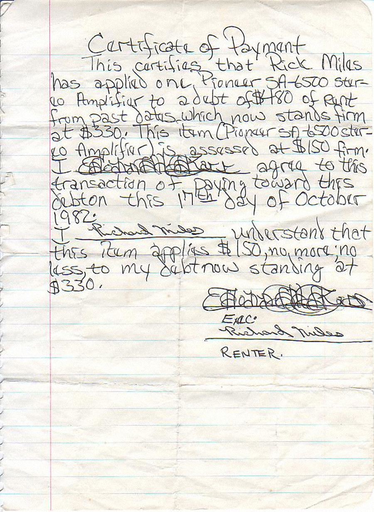
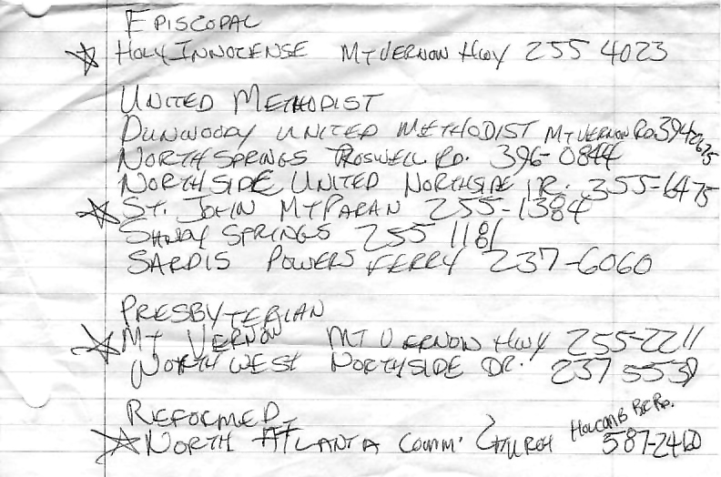
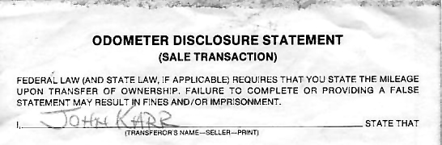
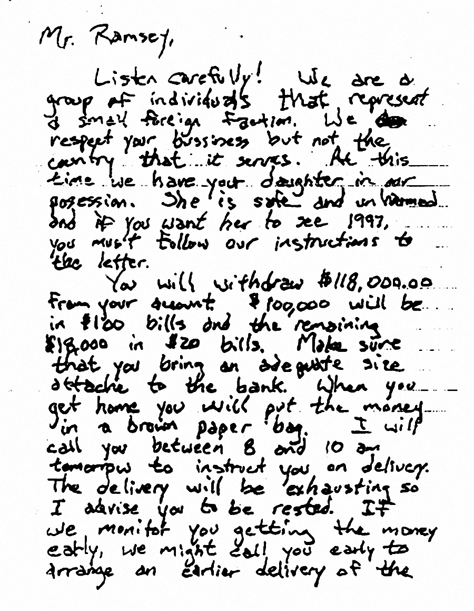
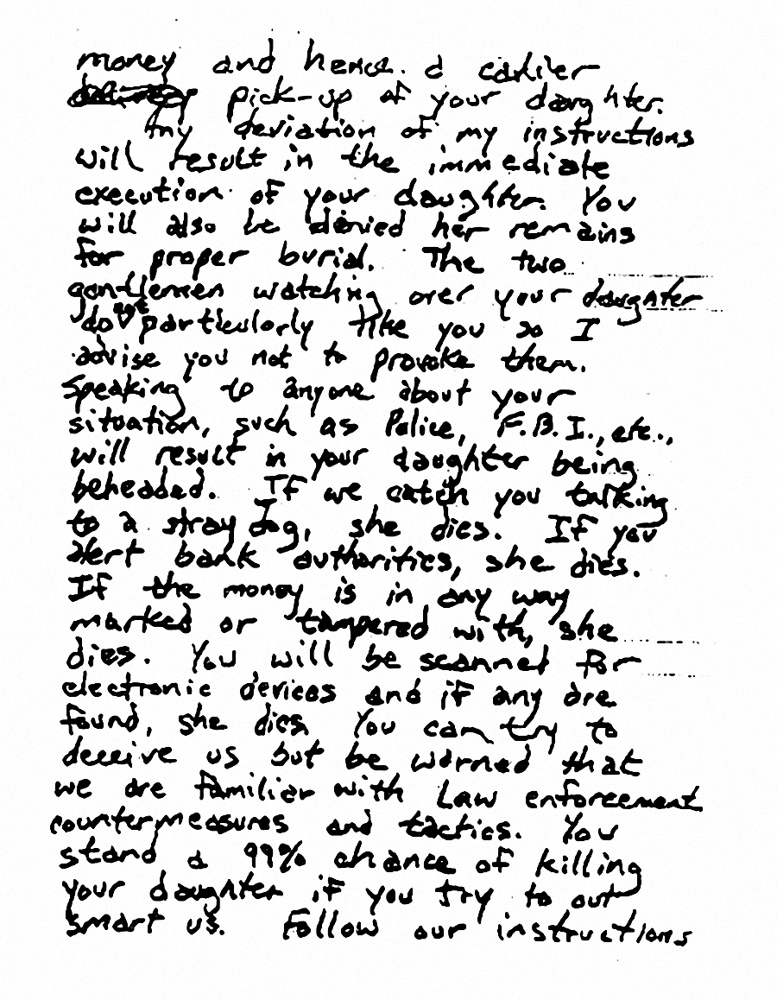
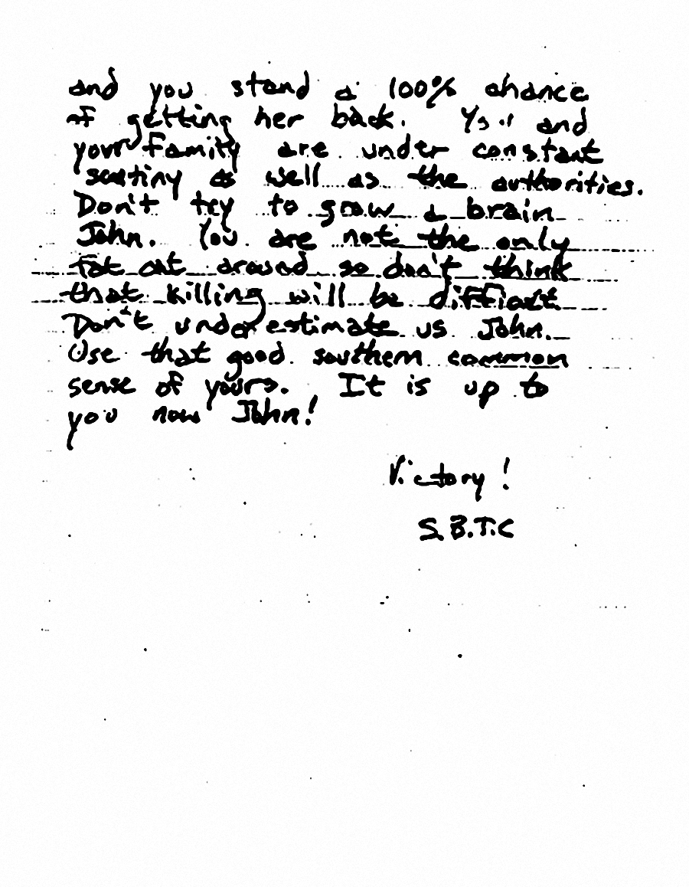

John Mark Karr Handwriting Samples
In 2007, four Karr handwriting samples were located in his Atlanta and Alabama homes by his girlfriend, Brooke Simmons Dovgan. The samples were released to four handwriting experts who connected Karr to the JonBenet Ramsey ransom note. The samples were downloaded by the Department of Justice and the Department of Homeland Security from the Lei Sussurra website after their release in December 2010.




Ramsey Ransom Note


©2016 Lei Sussurra